La galaxie, observée depuis Haut-roc L'arbre du refuge de Suramar Le Soleil de Talador
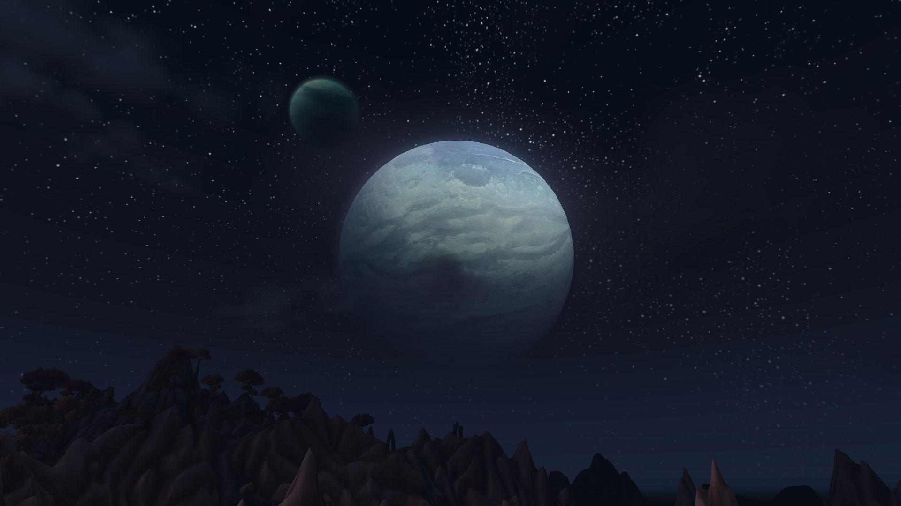
La nuit, Flèches d'Arakk (Draenor) Le jour, Flèches d'Arakk (Draenor) Dalaran, vu depuis la brume de Suramar
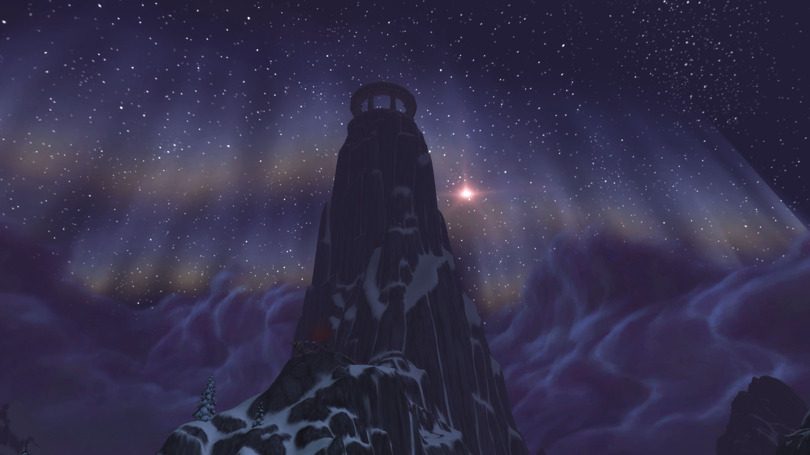
Les pics foudroyés, plus haut sommet du jeu
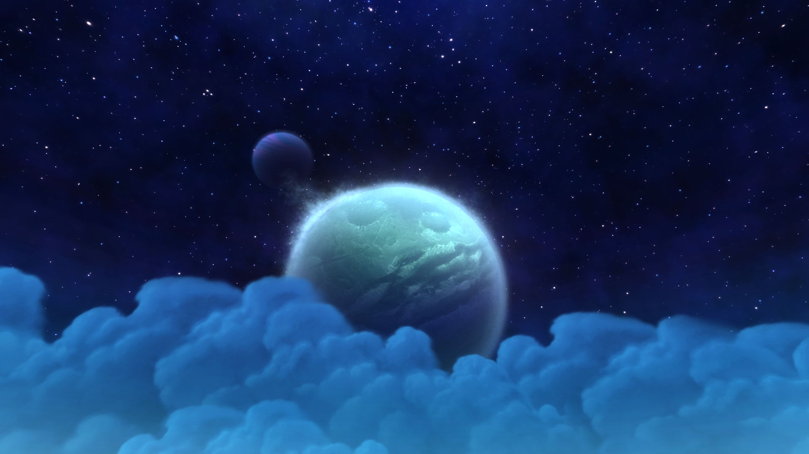
Vallée d'Ombrelune Le temple du loa Bwonsamdi Nazmir
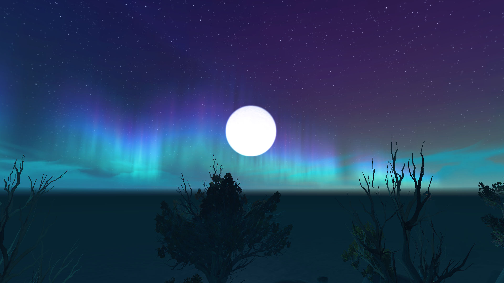
Les côtes de Drustvar
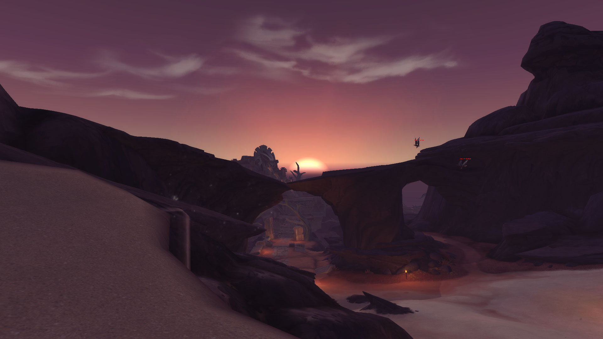
Coucher de Soleil sur Vol'dun
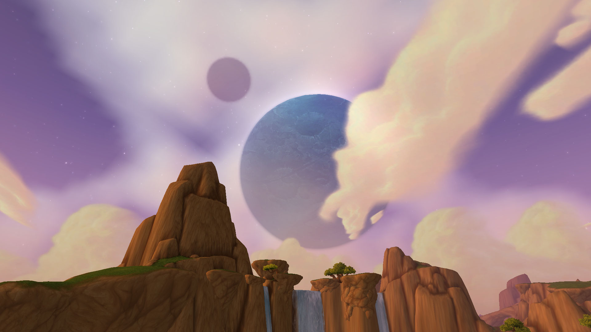
Nagrand, Outreterre
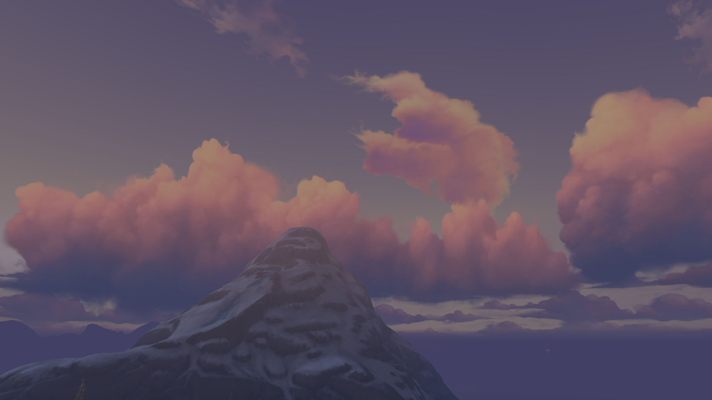
Sommet de Kun'lai Les étoiles au dessus de nos têtes Le brutosaure de Nazmir
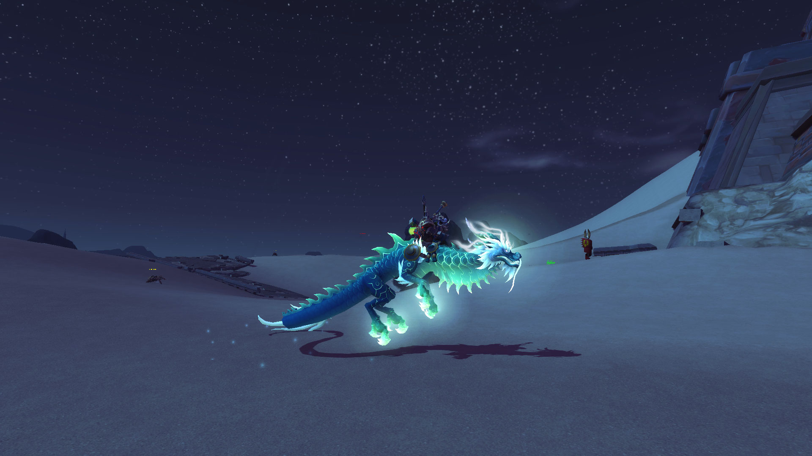
Une nuit dans Vol'dun
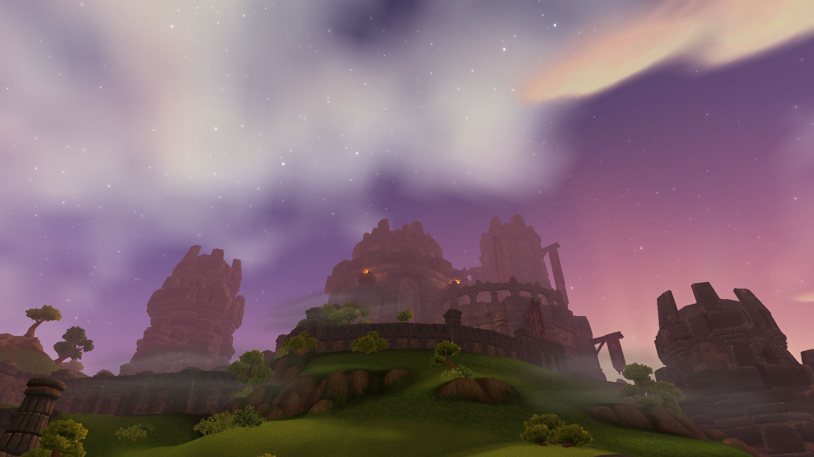
La citadelle rochepoing, Nagrand (Draenor)
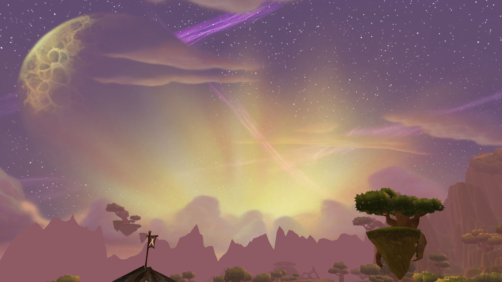
Lever de Soleil en Nagrand (Outreterre) Rezan, loa des rois (Zuldazar) Ciel de Zuldazar
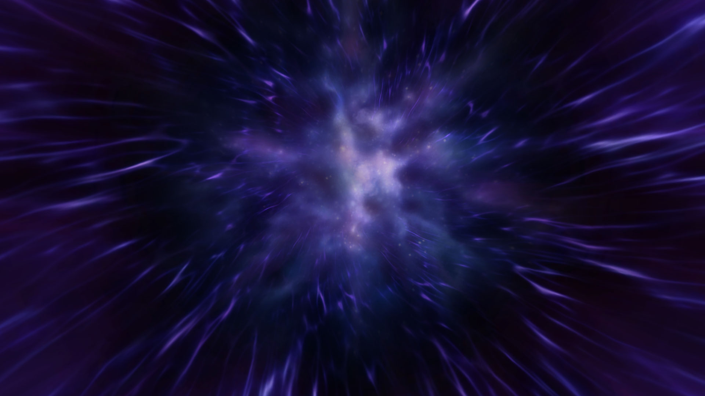
La nuit corrompue sur Argus
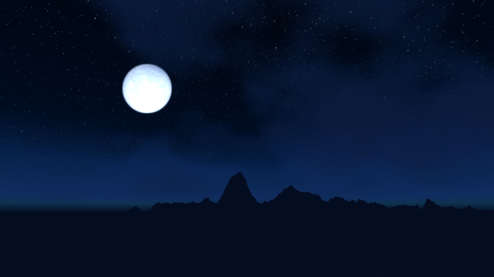
La Lune, Vallée Chantorage
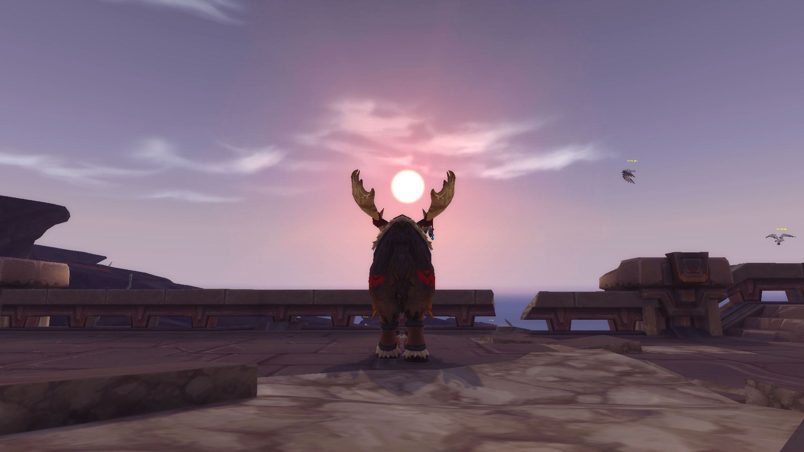
Merci de votre attention,
Erokta (Arno, Druide niveau 120)
Klaîms (Hugo, Paladin niveau 120)
Keussito (Pierre, Démoniste niveau 120)